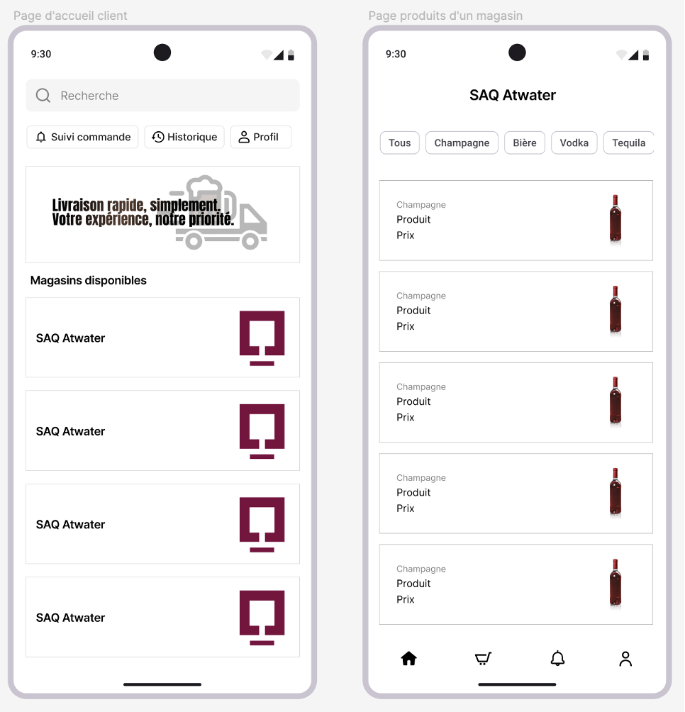
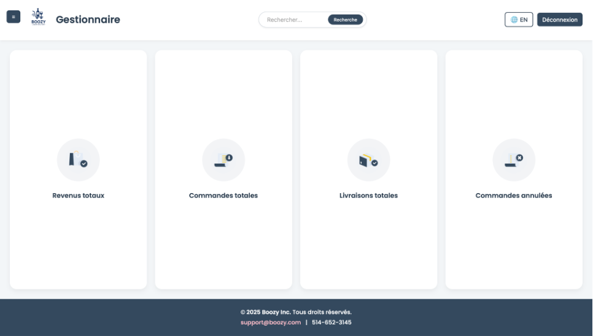
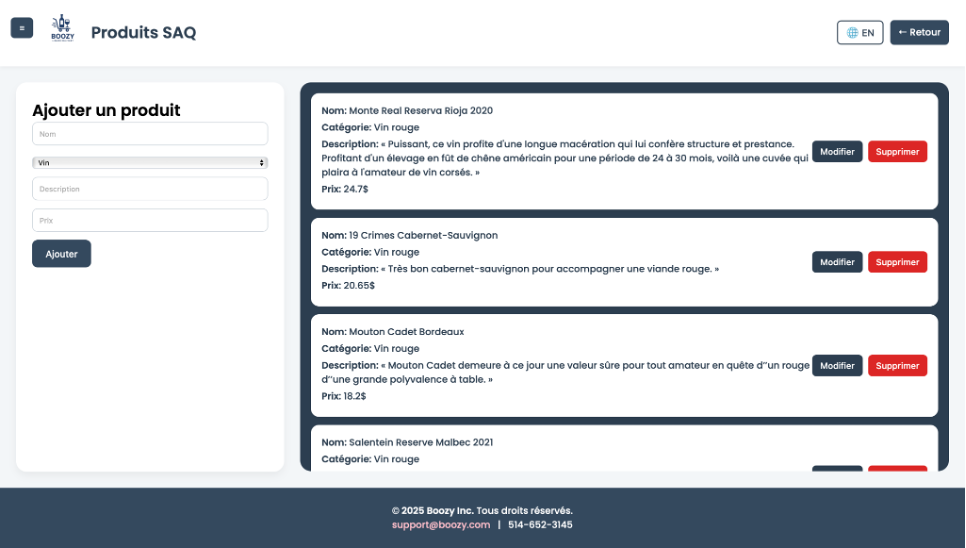

Frontend
Interfaces responsives, composants propres, pages lisibles.
Responsive interfaces, clean components, readable pages.
Software Engineering · ÉTS · Montréal
Étudiant en génie logiciel, je crée des interfaces modernes, des APIs et des tableaux de bord avec une attention particulière au détail, à l'expérience utilisateur et à la qualité du code. Software engineering student building modern interfaces, APIs, and dashboards with strong attention to detail, user experience, and code quality.

Interfaces responsives, composants propres, pages lisibles.
Responsive interfaces, clean components, readable pages.
APIs REST, authentification, logique métier et données.
REST APIs, authentication, business logic, and data.
Vision utilisateur, détails visuels et workflows complets.
User focus, visual detail, and complete workflows.
ProfilProfile
Je suis étudiant en génie logiciel à l'ÉTS. Mes projets montrent ma capacité à créer des interfaces, connecter un backend, organiser des données et penser au parcours utilisateur du début à la fin. I am a software engineering student at ÉTS. My projects show my ability to build interfaces, connect backend services, organize data, and think through the user journey from end to end.
CompétencesSkills
ProjetsProjects



Plateforme de commande et livraison avec application client, profil livreur, tableaux de bord gestionnaire, gestion des produits, utilisateurs et commandes. Ordering and delivery platform with customer app, driver profile, manager dashboards, product management, users, and orders.
GitHub ↗
Ajout, modification et suppression de produits avec liste administrable.Add, edit, and delete products through an admin interface.

Création de comptes et séparation des rôles client, livreur et gestionnaire.Account creation with customer, driver, and manager roles.

Suivi des commandes, statuts, prix et actions administratives.Order tracking with statuses, prices, and admin actions.
Application de gestion financière avec authentification, transactions et tableaux analytiques.Financial app with authentication, transactions, and analytics dashboards.
GitHub ↗API REST sécurisée avec JWT, contrôle d'accès, PostgreSQL et déploiement conteneurisé.Secure REST API with JWT, access control, PostgreSQL, and containerized deployment.
GitHub ↗Application Java Swing en MVC pour comptes, transactions et séparation de responsabilités.Java Swing MVC application for accounts, transactions, and separated responsibilities.
ParcoursEducation
École de technologie supérieure (ÉTS), Montréal
École de technologie supérieure (ÉTS), Montréal
Contact